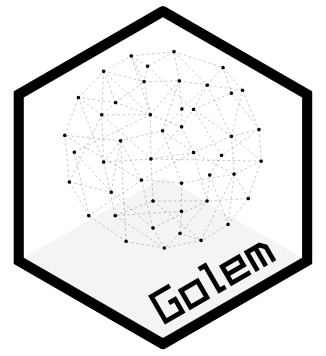

SIGNATURE
v2.0
pyLODE documentation
Browse the ontology's classes, properties and relationships.
Read the documentationA computational ontology for narrative and fiction

Ontology of fiction and narrative, developed as an an extension of the Erlangen CRM and aligned with the DOLCE-Lite-Plus Ecosystem. It adopts a DOLCE+DnS Ultralite (DUL) design pattern for modelling textual and character attributes. GOLEM also reuses selected constructs from LRMoo, preserving their original namespace and introducing only the additional classes and relations required for its modelling purposes.
Narrative phenomena can be viewed as interconnected systems in which components influence one another. Understanding narratives therefore requires analyzing their elements in relation to each other and within their broader context, rather than in isolation (Pianzola, 2018). Formal ontologies provide a structured approach to representing the essential elements of storytelling through explicit concepts, constraints, and relationships. This is particularly relevant in literary studies, where quantitative and probabilistic methods can struggle to account for the semantic richness and intensional qualities of texts (Ciotti, 2016). Ontology modelling makes narrative structures explicit and computable.
The GOLEM project develops an ontology that models narratives and fiction independently of their specific domains. It seeks to establish a common ground for representing how key elements of narrative structure—including events, characters, social relationships, and settings—interrelate. Through a modularisation approach, GOLEM aims to create a comprehensive library of modules covering these narrative components, including characters, relationships, events, settings, and narrative inference. The ontology also supports comparative studies across cultural contexts, providing a framework for exploring cumulative cultural evolution and how narratives evolve over time (Pianzola et al., 2020).
GOLEM v2.0 introduces a major architectural and semantic refactoring.
It adopts Erlangen CRM as its CRM foundation and reuses selected LRMoo
constructs through a lightweight strategy, avoiding the import of the
full LRMoo and CRM OWL dependency chain. The feature model has been
revised through the DUL Region pattern, with G2_Feature
represented as a region and GP0_has_feature aligned with
the corresponding region relation. The revision also removes
dol:generically-dependent-on, avoiding an unnecessary
semantic commitment where dependencies can instead be addressed through
provenance mechanisms. These changes reduce the ontology's import
closure while preserving its intended semantics and improving
computational tractability and maintainability. Detailed descriptions
of the individual modules are available in the GOLEM ontology
documentation on GitHub.
ONTOLOGY IRIs
The current IRI always resolves to the latest release. For reasoning or unambiguous reference, cite a versioned IRI: definitions and the underlying formal semantics may change between releases.
https://w3id.org/golem/ontologyhttps://w3id.org/golem/ontology/v2.0Browse the ontology's classes, properties and relationships.
Read the documentationAccess the ontology in formats suitable for semantic-web tools and standard data science workflows.
Explore the ontology's components and how individual modules fit into the larger framework.
Browse the wikiCurrent release · Major refactoring
Legacy artefact
GOLEM builds on upper-level ontological foundations and aligns with established external frameworks to ensure semantic accuracy and interoperability.
CITATION
Pianzola, F., Pannach, F., Cheng, L., Yang, X., & Scotti, L. (2024). GOLEM Ontology for Narrative and Fiction.
DOI: 10.3390/h14100193BIBLIOGRAPHY
Abbott, H. P. (2019). Narrativity. In P. Hühn et al. (Eds.), The living handbook of narratology. Hamburg University.
Bartalesi, V., Meghini, C., & Metilli, D. (2017). A conceptualisation of narratives and its expression in the CRM. International Journal of Metadata, Semantics and Ontologies, 12(1), 35–46. 10.1504/IJMSO.2017.10005083
Bekiari, C., Bruseker, G., Canning, E., Doerr, M., Michon, P., Ore, C.-E., Stead, S., & Velios, A. (2024, October). Conceptual reference model (CIDOC ecrm), version 7.3 (Tech. rep.). CIDOC ecrm-SIG.
Carroll, N. (2015). Interpretation. In The Routledge companion to philosophy of literature (pp. 302–312). Routledge.
Chaturvedi, S., Srivastava, S., Daume III, H., & Dyer, C. (2015). Modeling dynamic relationships between characters in literary novels. arXiv preprint arXiv:1511.09376. 10.48550/arXiv.1511.09376
Ciotti, F. (2016). Toward a formal ontology for narrative. MATLIT: Materialidades da Literatura, 4(1), 29–44.
Doerr, M., Kritsotaki, A., Rousakis, Y., Hiebel, G., & Theodoridou, M. (2023, October). ecrmsci: The scientific observation model (Tech. rep.). CIDOC ecrm-SIG.
Jannidis, F. (2019). Character. In P. Hühn et al. (Eds.), The living handbook of narratology. Hamburg University.
Kukkonen, K. (2019). Plot. In P. Hühn et al. (Eds.), The living handbook of narratology. Hamburg University.
Lea, K. M. (1962). Italian popular comedy: A study in the commedia dell'arte, 1560–1620 with special reference to the English stage (Vol. 1). Russell & Russell.
Mika, P., & Gangemi, A. (2016). Descriptions of social relations. Benefits, 1, 14.
Pannach, F. (2023, July). “Orpheus came to his end by being struck by a thunderbolt”: Annotating events in mythological sequences. In Proceedings of the 17th Linguistic Annotation Workshop (LAW-XVII) (pp. 10–18).
Pannach, F. A. K. (2024). Narrative echoes across time and space.
Pannach, F., Sporleder, C., May, W., Krishnan, A., & Sewchurran, A. (2021). Of lions and Yakshis. Semantic Web, 12(2), 219–239.
Propp, V. (1968). Morphology of the folktale. University of Texas Press.
Pianzola, F. (2018). Looking at narrative as a complex system: The proteus principle. In Narrating complexity (pp. 101–122).
Pianzola, F., Acerbi, A., & Rebora, S. (2020). Cultural accumulation and improvement in online fan fiction. In CEUR Workshop Proceedings (Vol. 2723). CEUR-WS.org.
Ryan, M.-L. (2019). Space. In P. Hühn et al. (Eds.), The living handbook of narratology. Hamburg University.
Sanfilippo, E. M., & Ferrario, R. (2024). D3.1—Observations modeling: State of the art.
Schöch, C., Hinzmann, M., Röttgermann, J., Dietz, K., & Klee, A. (2022). Smart modelling for literary history. International Journal of Humanities and Arts Computing, 16(1), 78–93.
Zgoll, A., Cuperly, B., & Cöster-Gilbert, A. (2023). In search of Dumuzi: An introduction to holistic narratology. In The shape of stories (pp. 285–350). Brill.
Zgoll, C. (2020). Myths as polymorphous and polystratic Erzählstoffe. In Mythische Sphärenwechsel: Methodisch neue Zugänge zu antiken Mythen in Orient und Okzident (pp. 9–82).